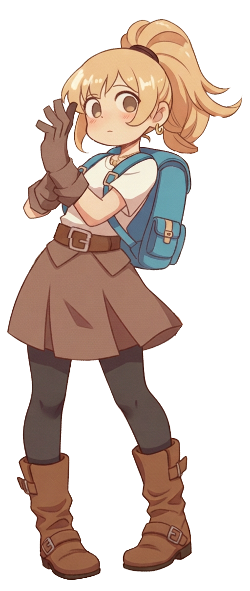
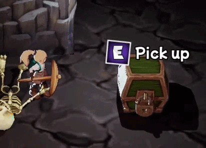
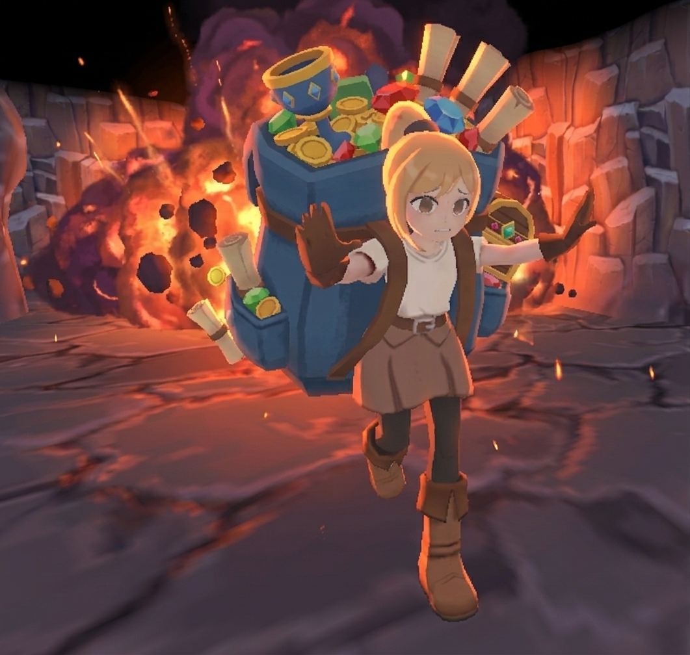
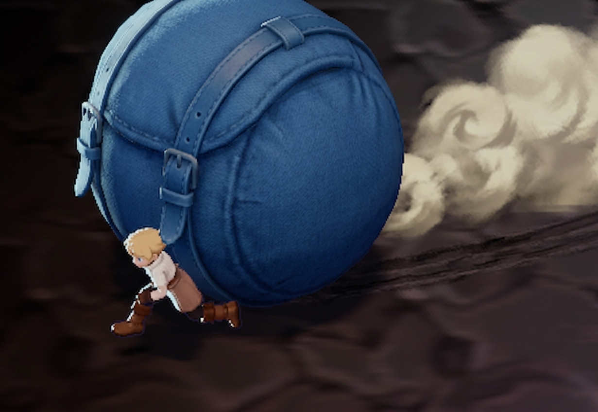
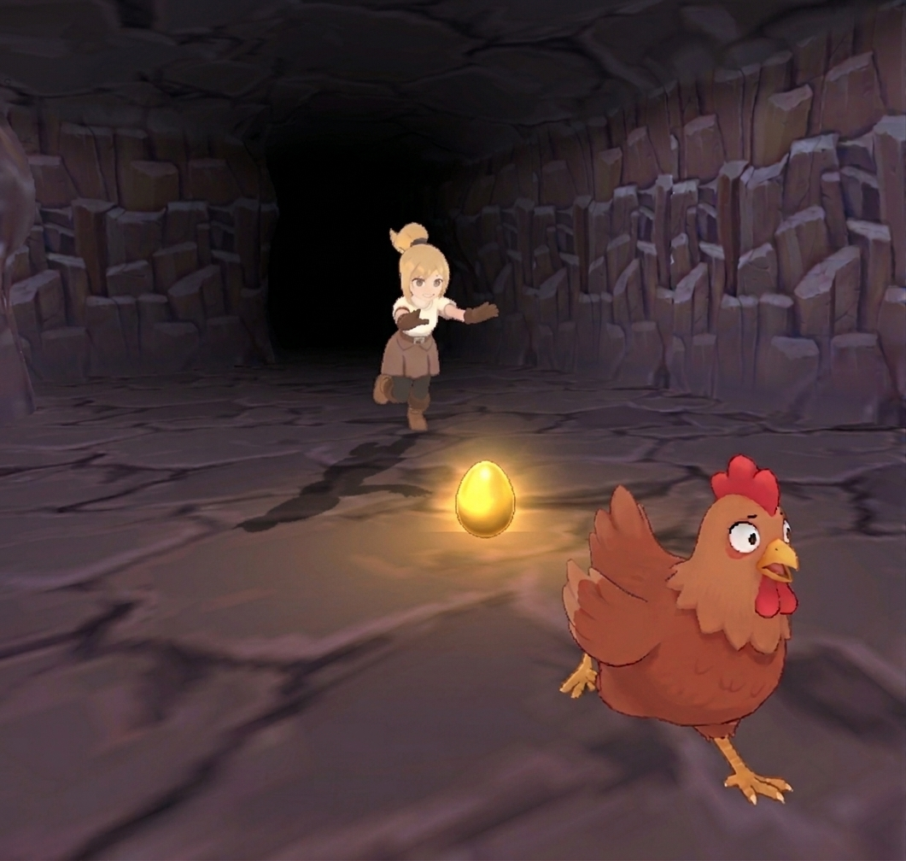

PROJET 01
Le Pitch
Fiona Volcano est un roguelite dans la lignée des "Digger" (Dig Dug, Mr Driller, Motherload). Le joueur incarne Fiona, une exploratrice avide d'or, qui s'aventure dans les profondeurs d'un volcan actif pour piller les trésors du roi mourant. L'environnement est composé de tiles 100% destructibles, chaque run est unique : gérer la chaleur, collecter des ressources, s'équiper, et surtout… savoir quand fuir.

Boucle de Jeu
Miner les tiles, collecter trésors et reliques
Éruptions, chaleur, fuite
Jeu de rythme pour protéger son butin
Hub, boutiques, enchères

Fiona tapant sur un coffre pour récupérer son contenu
Statistiques du Personnage
Vitesse
Affecte la vitesse de déplacement et de ramassage d'objets.
Force
Détermine la capacité à porter des objets lourds et augmente légèrement les dégâts.
Résistance
Détermine la résistance à la chaleur de Fiona.
Chance
Augmente la probabilité de trouver des objets rares.
Prestige : Un "outil situationnel" basé sur l'équipement porté. Un prestige élevé ouvre l'accès à des zones de luxe (enchères) mais augmente les prix chez les marchands de base. Un prestige faible fait l'inverse, donnant accès à des prix plus justes mais fermant les portes des beaux quartiers.
Les Éruptions : Escalade Environnementale
Pas de timer UI affiché à l'écran. Le volcan communique le danger par escalade environnementale organique.
Phase 1 : Calme
Grondements lointains. Le joueur explore librement et sereinement les galeries.
Phase 2 : Tension
Secousses, fissures lumineuses apparantes. Des signes souvent trompeurs entretiennent le doute.
Phase 3 : Danger
Lave active, débris projetés, musique intense. Il faut sérieusement envisager la fuite vers la sortie.
Phase 4 : Fuite
Nuée ardente explosive traversant les failles. Sprint final et QTE de corde pour atteindre la surface.
Le joueur ne sait jamais exactement quand l'éruption va frapper. Le doute permanent crée une tension qui pousse à des décisions risquées : "encore un coffre… ou je cours ?"

Fiona fuyant une éruption volcanique
Le Sac : Risque vs. Récompense Physique
Le sac à dos est au cœur de chaque décision. Chaque trésor ramassé est un pari conscient sur la capacité de fuite.
Poids & Lenteur
Chaque objet a un poids réel. Plus le sac est lourd, plus Fiona est lente pour fuir. Elle peut cependant contrebalancer cela avec le "Bowling Mode", qui permet de garder de la vitesse avec beaucoup d'objets sur le dos, mais en perdant du contrôle en contrepartie.
Élasticité du Sac
Dépasser la capacité de base augmente drastiquement le risque d'explosion du sac au moindre choc.
Bowling Mode
Un sac assez gros accumulant de la vitesse devient une boule dévastatrice qui broie tout sur son passage.
Tri Rapide
Mécanique d'urgence consistant à ouvrir le sac in-game pour jeter du loot afin d'alléger son poids très rapidement.

Le Bowling Mode : Fiona utilise son sac comme arme dévastatrice
Le Hub : Zone de Préparation
Zone sûre entre chaque "run". Elle contient plusieurs points d'intérêt essentiels pour se préparer à la prochaine descente.
La Planque
Permet de stocker son trésor en lieu sûr de manière permanente entre les expéditions.
La Boutique
Vend de l'équipement standard commun (outils basiques, sacs de base, réserves d'eau).
Sorcière Gitane
Vend, achète et identifie les reliques magiques et les objets non identifiés ramassés.
Enchères
Vendre des objets très chers et en acheter de très rares. L'accès requiert un haut niveau de prestige.
Système d'Enchères : Objectifs & Déroulement
Le système d'enchères est un mini-jeu social et économique conçu pour enrichir l'expérience au-delà de la boucle principale : équilibrer l'économie en limitant l'enrichissement rapide, et contrôler l'accès aux objets de fin de jeu introuvables autrement.
Phase de Préparation
Avant le début des enchères, un tableau présente tous les objets mis en vente. Le joueur peut consulter les lots des PNJ et y ajouter les siens. Moment clé pour décider stratégiquement de ce qui a le plus de potentiel aujourd'hui.
Début de l'Enchère
Une fois lancée, les objets sont présentés un par un. Le joueur peut choisir de miser pour acheter, ou simplement observer les réactions lorsque l'un de ses propres objets rares est mis sur la table.
Miser et Surenchérir
Le joueur et les PNJ enchérissent tour à tour. Le joueur peut lire l'audience (exclamations, sifflements) et cibler les collectionneurs spécifiques. Un score de prestige élevé peut intimider les acheteurs concurrents, les poussant à se retirer.
Fin de Run : La "Shower of Fortune"
À la fin d'une run réussie, un mini-jeu optionnel de rythme se déclenche. Fiona danse au milieu de son butin pour impressionner les villageois. Une performance réussie (QTE musical) convainc le public ravi de lancer des pourboires et des objets bonus rares directement sur scène.
Bestiaire Systémique
Chaque créature du donjon possède une fonction qui s'intègre profondément dans le gameplay. Les ennemis ne sont pas de simples obstacles pour "remplir" la map, ils interagissent avec les mécaniques de base (chaleur, objets, trésors) et forcent des choix tactiques.

Le Poulet d'Or
Pond des œufs de valeur en fuyant. Pousse le joueur à la cupidité, l'incitant à le poursuivre dans des zones très dangereuses.
La Flammèche
Augmente drastiquement la température autour d'elle, interagissant directement avec le système de chaleur létal du volcan.
Le Rat
Interagit avec les trésors en volant les objets au sol. Force le joueur à prioriser le ramassage pour protéger son précieux butin.
La Banshee
Génère un froid glacial mortel. Paradoxalement, sa zone d'aura peut servir de refuge de fortune pendant une éruption de chaleur globale.
Le Mimic
Imite l'apparence des trésors. Pousse le joueur à analyser visuellement chaque coffre avec prudence au lieu d'ouvrir aveuglément.
Le Golem
Capable de détruire des parois indestructibles pour Fiona. Peut être consciemment attiré par le joueur pour ouvrir un passage secret vers des trésors.
Décisions de Design (Annexes)
Gestion de la chaleur comme tension
Sans contrainte temporelle ou physique, le joueur mine sans fin. La chaleur croissante force l'équilibre continu entre l'avidité (progression) et la peur (survie).
Spécialisation des outils
Un seul outil optimal rendait l'exploration monotone. La solution d'équilibrage : les Pioches font +100% sur les parois, les Maillets +100% sur les coffres, les Épées +250% sur les créatures.
Level Design : Génération Procédurale & Curiosité Récompensée
Chaque descente dans le volcan est unique. Le terrain est généré par un système procédural multi-couche basé sur des Perlin Noise superposées, combiné à des niveaux pré-conçus ("presets") qui s'intègrent de manière pondérée dans la grille.
Pipeline de Génération
Placement des Rooms & Temples
Définition des points d'apparition des structures pré-conçues (salles de trésor, temples, corridors). Chaque preset a un poids (0 à 1) : à 1 la case est placée telle quelle, à 0 c'est la génération procédurale qui prend le relais.
Biomes (4 Noise Maps)
Quatre paramètres de bruit se combinent pour déterminer le biome : Profondeur (gradient linéaire), Porosité (éclaircies), Température (magma) et Humidité (eau). Exemples : Humidité + Température = Sources Chaudes, Porosité + Humidité = Forêt souterraine.
Trésors & Créatures
Placement intelligent basé sur la topologie générée. Les trésors sont placés là où ils récompensent la curiosité : grottes isolées, bouts de corridors, îlots au milieu de lacs de lave, derrière des parois de roche dure.
Curiosité Récompensée : Zones d'Intérêt
Le placement des trésors n'est pas aléatoire. Le système analyse la topologie du terrain généré pour identifier les zones d'intérêt (cul-de-sacs, cavités isolées, îlots entourés d'obstacles) et y concentrer les récompenses rares. Le joueur qui explore au-delà du chemin évident est systématiquement récompensé.
Treasure Rooms
Salles cachées avec une concentration élevée de trésors. L'objectif est de les trouver.
Challenge Rooms
Trésors précieux entourés d'eau, de lave ou de monstres. Haut risque, haute récompense.
Corridor Rooms
Un trésor quasi garanti au bout de chaque long couloir. La persévérance est récompensée.
Temple Rooms
Murs quasi impénétrables, pièges, et choix cruel : prendre un item en verrouille les autres.
Démonstration : Création de Preset

Création d'un preset de niveau dans l'éditeur